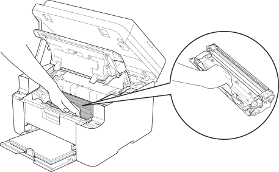

- 1
-
Отворете капаците.

- 2
-
Извадете комплекта барабанен модул от устройството.
- 3
-
За да почистите коронарната мрежа, плъзнете зеления щифт на барабанния модул от едната страна до другата 3 пъти.
Непременно върнете щифта в начална позиция (1).
- 4
-
Поставете комплекта барабанен модул отново в устройството и затворете капаците.